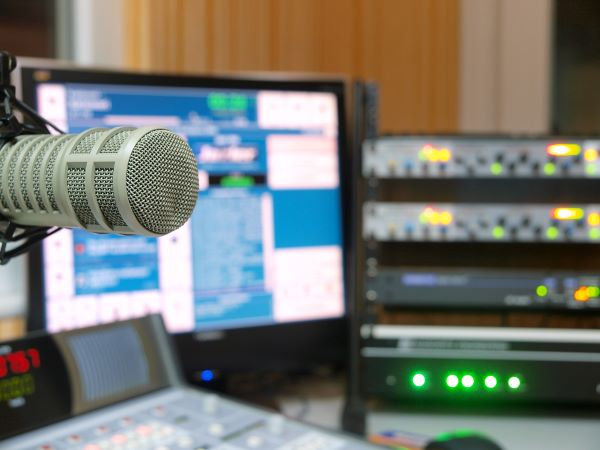
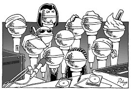
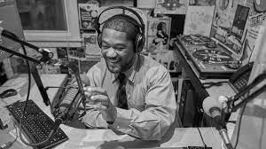
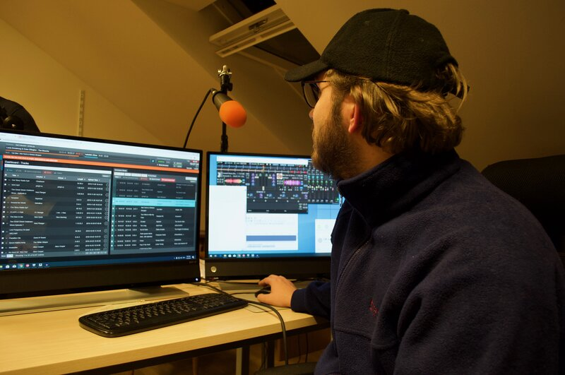

Join Seattle's People-powered Radio Station by Helping in Any Number of Ways.

Please drop us a line at hello@space101fm.org to learn more and watch this space for specific opportunities.
Are you the kind of person who...
Enjoys building community connections?
Has a skill or talent or time to share?
Likes to make things happen?
Are you interested in:
Publicity/community outreach/social media
Program development/training
Policy and procedure development
Listen as we grow!



Tune in to original hyper-local programming created by your friends and neighbors right here in NE Seattle and beyond. As our capacity to staff the station increases, more people will be able to participate. We are seeking programming from diverse communities city wide in the following areas:
Arts
Spoken word, storytelling, music, theater of the mind, book club, artist interviews, live musical performances...
Athletics, Health, Fitness
Conversations and reports on coaching strategies, team scores reporting, hikes, bike rides and climbs...
Cultural
Programs sharing diverse cultural aspects and languages, news affecting special populations, ethnic heritage programming, food, movie reviews...
Environmental News and Science
NOAA news, glacier reports, nature reporting from Magnuson Park...
Music
Musical programs which explore and enlighten a wide range of genres, styles and artists...
News/Public Affairs
Particularly information pertaining to Seattle city council districts 4 and 5, neighborhood groups, various departments of the City of Seattle and guest producers from around Seattle...
Youth Programs
Stories, reporting, music shows and more from NE Seattle students...
Your ideas
Participatory radio is for everyone! Please feel free to send us your programming ideas and preferences anytime to hello@space101fm.org or complete and email us a programming application.
SPACE 101.1 LPFM is a service of Sand Point Arts and Cultural Exchange (SPACE). Funding, facilitating and promoting arts and cultural uses of Magnuson Park for the public.
SPACE is a 501(c)(3), EIN 91-1712171.
Powered in part with the support of
Seattle Parks and Recreation